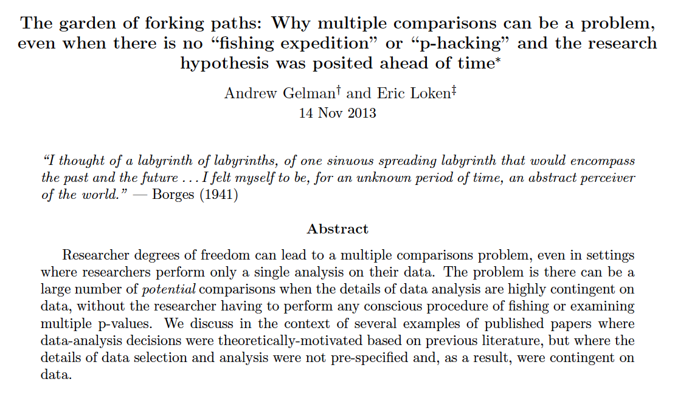
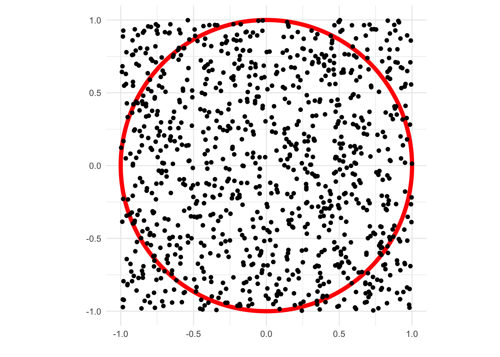
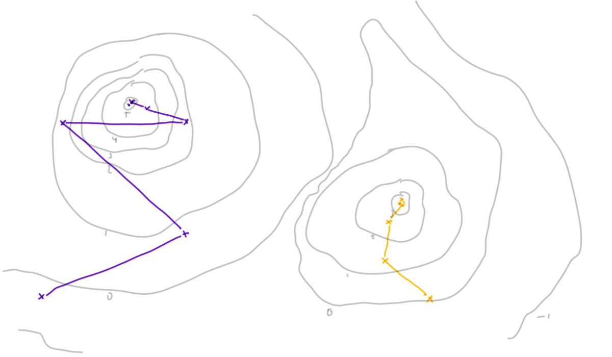

10 Reproducibility
Note
Effective Data Science is still a work-in-progress. This chapter is largely complete and just needs final proof reading.
If you would like to contribute to the development of EDS, you may do so at https://github.com/zakvarty/data_science_notes.
10.1 The Data Scientific Method
In what we have covered so far we have been very much focused on the first aspect of data science: the data. When we come to consider about whether our work can be reproduced or our results can be replicated, this shifts our focus to the second other, the science.
As data scientists, we like to think that we are applying the scientific method in our work.
We start with a question we want to answer or a problem we want to solve. This is followed by a search of the existing literature: is this is a well-known problem that lots of people have solved before? If it is, fantastic, we can learn from their efforts. If not, then we proceed to gather our own evidence and combine this with whatever existing knowledge we could scrape together. Finally, we draw conclusions from this synthesised information.
When doing so we acknowledge that the conclusions we reach are not the truth, just our current best approximation of it. We have a usefully simplified model of the messy reality that we can share with the world. We will happily update our model as we become aware of new evidence, whether that new information supports or contradicts our current way of thinking.
That sounds excellent and is, in an ideal world, how both science and data science would progress. However, just like our models this is a simplified (and in this case idealised) description of what really happens.
10.2 Issue: Multiple, Dependent Tests
Projects are usually not a single hypothesis test
Sequence of dependent decisions
e.g. Model development
Can fool ourselves by looking lots of times or ignoring sequential and dependent structure.
The aims of a data science project are rarely framed as a clear an unambiguous hypothesis, for which we will design a study and perform a single statistical analysis. Apart from in special cases, like A/B testing, we have a much more general aim for our data science projects.
{Abstract text of Gelman and Loken (2013).}
We might want to construct a model for a given phenomenon and we’ll try many variants of that model along the way. By taking a more relaxed approach to data analysis, data scientists can run the risk of finding spurious relationships within our data that don’t hold more generally. If you look for a relationship between the quantity you are trying to predict and enough samples of random noise will almost surely find a significant relationship, even though there is no true link.
10.3 Issues: \(p\)-hacking and Publiction Bias
 {Bar chart of p-values in medical publications, showing a large drop between 4-5 percent and 5-6 percent.}
{Bar chart of p-values in medical publications, showing a large drop between 4-5 percent and 5-6 percent.}
Okay, so our methods of investigation as data scientists might not be completely sound, but that should be balanced by the results of other studies that exist, right? Well, the second worrisome aspect of this process is that we can’t always trust the published literature to be a fair representation of what people have tried in the past.
Studies that don’t provide strong evidence against the null hypothesis rarely make it into publications, reports or the news. This is largely because of the way that scientific enquiry is rewarded in the the academy, business and the media. Funding and attention tend to go to studies with new findings, rather than those which aim to confirm or strengthen the findings of existing studies.
This systemic problem incentives scientists to ‘massage’ numbers to obtain a \(p\)-value less than 0.05 so that a result can be reported as statistically significant. This process is known as \(p\)-hacking and can occur through deliberate malpractice but more often it’s a result of scientists generally not receiving adequate training in statistics. As statistically trained data scientists we know that a declaration of significance is no indication of a meaningful effect size and that the conventional significance level of 5% is entirely arbitrary. However, we need to be aware that this is not the case across science and that even we aren’t immune to the societal and systematic influences that favour the publication of novel results over confirmatory ones.
These influences also lead to a much more subtle problem than direct \(p\)-hacking. Consider a model with an obvious but unnecessary additional property to add: a example here might be adding an unnecessary term to a regression. Because this extension is such low hanging fruit, many scientists independently design experiments to test it out. Most of these experiments provide insufficient evidence against the null hypothesis and don’t get developed into published papers or technical reports, because they just support the status-quo. However, after enough people have attempted this some scientist will get “lucky” and find a significant (and potentially relevant) benefit. Of all the experiments that were done, this is the only one that makes it onto the public record.
All of these studies being left in the proverbial desk drawer induces publication bias in the scientific literature. When we come to assess the state of existing knowledge, we are unable to properly assess the importance of findings, because we lack the context of all those null results that went unreported.
This same process means that the results of many more scientific studies than we would expect cannot be recreated. This is what is known as the scientific replication crisis.
10.4 Reproducibility
Reproducibility: given the original raw data and code, can you get all of the results again?
Reproducible != Correct
“Code available on request” is the new “Data available on request”
Reproducible data analysis requires effort, time and skill.
This idea of reproducibility requires us to be able to recover the exact same numerical summaries as the original investigator. In particular this means we should be able to reproduce the exact same point estimates and measures of uncertainty that they did, which ensures we’ll draw the same conclusions as that original investigator.
When putting our work into production there are several reasons why we might require it to be reproducible. The first is logistical: production code needs to be robust and efficient - this often means your code will be re-factored, rewritten or translated into another language. If your results are not reproducible then there is no way to verify that this has been done correctly. Secondly, if a problem is identified in your work (say a customer raises a complaint that their loan application was incorrectly rejected) you need to be able to accurately recreate that instance to diagnose if there is a problem and exactly what caused it.
Note that just because findings are reproducible, that doesn’t by any means imply that they’re correct. We could have a very well documented but flawed analysis that is entirely reproducible but is also completely unsuitable or just plain wrong.
In our data science projects, we have already taken several steps that greatly improve the reproducibility of our work. Although we scripted, tested and documented our work to improve the management of our project, these decisions improve the scientific quality of our work too. This puts us in a strong position relative to the scientific literature as a whole.
At a point now where it is almost standard to publish data along with papers, but for a long time this was not the case and data if data were available at all, this was only by request. We are now in a similar situation when it comes to code. It’s still far from standard for the analysis code to be required and put up to detailed scrutiny as part of the peer-review process.
With a little more context this isn’t so unreasonable. Across many scientific disciplines, code-based approaches to analysis is not standard; statistical software with a graphical user interface is used instead. The idea here is to allow scientists to analyse their own data by providing tools trough a combination of menus and buttons. However, these interfaces often leave no record of how the data were manipulated and the software itself can be highly specialised or proprietary. This combination means that even when full datasets are provided, it is often impossible for others to reproduce the original analysis.
None of this is meant to scold or disparage scientists who use this type of software to allow them to perform statistical analyses. You’re well aware of how much time and effort it takes to learn how to use and implement statistical methods correctly. This is time that other scientists invest in learning their subject, so that they can get to the point of doing research in the first place. This is one of the wonders of data science: the ability to work in multi-disciplinary teams where individual members are specialised in different areas.
This is where we need to pause and check ourselves, because the same fate can easily befall us as data scientists. Yes, it take time to learn the skills and practices to ensure reproducibility, but it also takes time to implement them and the time of an expert data practitioner doesn’t come cheap. If you wait until the end of a project before you make it reproducible then you’ll usually be too late - time or money will have run out.
10.5 Replicability
Replicable: if the experiment were repeated by an independent investigator, you would get slightly different data but would the substative conclusions be the same?
In the specific sense, this is the core worry for a statistician!
Also used more generally: are results stable to perturbations in population / study design / modelling / analysis?
Only real test is to try it. Control risk with shadow and parallel deployment. Statisticians are well aware that if we were to repeat an experiment we would get slightly different data. This would lead to slightly different estimates and slightly different results.
Ultimately, this is the core problem that statisticians get paid to worry about: will those changes be small enough that the substantive conclusions are not impacted? Yes, point estimates will vary slightly but do your conclusions about the existence, direction or magnitude of an effect still hold? Alternatively, if you are estimating a relationship between two variables, is the same functional form chosen as the most suitable?
In a general scientific context, replication takes a more broad meaning and asks whether the key properties of your results could be replicated by another person. In the context of getting your work put into production, we acre concerned about whether your the results of your findings will also hold when applied to future instances that might differ from those you have seen already.
If you come to data science from a statistical background then you are well accustomed to these sorts of considerations. Whenever you perform a hypothesis test or compare two models, you take steps to make sure the comparison is not only valid for this particular sample, but that is also true out-of-sample. This is the whole reason data scientists make training and test sets in the first place, as an approximate test for this sort of generalisation. We we do any of these things we are asking of ourselves: will this good performance replicate if we had different inputs?
Of course train-test split, bootstrap resampling or asymptotic arguments can only ever approximate the ways in which our sample differs from the production population, to which our models will be applied. The only way to truly assess the out-of-sample performance of our models or generalisability of our findings is to put that work into production.
This opens us up to risk: what if our findings don’t generalise and our new model is actually much worse than the current one? It’s not possible to both deploy our new model and also avoid this risk entirely. However, we can take some steps to mitigate our level of exposure.
10.5.1 Shadow deployment
In the most risk-adverse setting we might implement a shadow deployment of our new model. In this case, the current model is still used for all decision making but our candidate model is also run in the background so that we can see how it might behave in the wild. This is good in that we can identify any points of catastrophic failure for the new model, but is also expensive to run and can give us only limited information.
Suppose, for example, our model is a recommender system on a retail website. A shadow deployment will let us check that the new system functions correctly and we can gather data on what products are recommended to each customer and investigate how these differ from those recommended by the current system. A shadow deployment cannot in this case tell us what the customer would have done had they been shown those products instead. This means that a shadow deployment doesn’t allow is to investigate whether the new system leads to equivalent or greater revenue than the current system.
10.5.2 Parallel deployment
Parallel deployment or A/B tests have both the current and the proposed new models running at the same time. This allows us to truly test whether our findings generalise to the production population while controlling our level of risk exposure by setting the proportion of times each model is used. The more instances we assign to the new model the faster we will learn about its performance but this also increases our risk exposure.
10.6 Reproduction and Replication in Statistical Data Science
10.6.1 Monte Carlo Methods
In data science we rely a lot on the use of stochastic methods. These are often used to increase the chance of our findings being replicated by another person or in production. However, they also make it more difficult to ensure that our exact results can be reproduced, whether by another person or our future selves.

Monte Carlo methods are any modelling, estimation or approximation technique that leverages randomness in some way.
We have seen examples of this to improve the probability of successful replication. The most obvious example of this is the random allocation of data in a Train/Test split for model selection.
Another example focused on improving replication is the use of bootstrap resampling to approximate the sampling distribution of a test statistic. This might be a parametric bootstrap, where alternative datasets are generated by sampling values from the fitted model of our observed data. Alternatively, a non-parametric bootstrap would generate these alternative datasets by sampling from the original data with replacement.
Monte Carlo methods can also be used to express uncertainties more generally, or to approximate difficult integrals. These are both common applications of Monte Carlo methods in Bayesian modelling, where (unless our models are particularly simple) the posterior or posterior-predictive distribution has to be approximated by a collection of values sampled from that distribution.
Each time we run any of these analyses we’ll get slightly different outcomes. For our work to be replicable we need to quantify this level of variation. For example, if we had a different sample from the posterior distribution, how much would the estimated posterior mean change by? Sometimes, as in this case, we can appeal to the law of large numbers to help us out. If we take more samples, the variation between realisations will shrink. We can then collect enough samples to our estimated mean is stable across realisations, up to our desired number of significant figures.
To make our results reproducible we will have to ensure that we can reproduce the remaining, unstable digits for any particular realisation. We can do this by setting the seed of our random number generator, an idea we will return to shortly.
10.6.2 Optimisation
Optimisation is the second aspect of data science that can be very difficult to ensure is reproducible and replicable.
Is the optimum you find stable over:
- runs of the procedure?
- starting points?
- step size / learning rate?
- realisations of the data?

If optimisation routines are used in parameter estimation, we have to ensure that the results they find for a particular data set are reproducible for a given configuration. This might be a given data set, initial set of starting parameters and step size, the learning rate (which controls how that step size changes) and the maximum number of iterations to perform.
We additionally need to be concerned about replication here. If we had chosen a different starting point would the optimisation still converge, and would it converge to the same mode? Our original method may have found a local optimum but how can we confirm that this is a global optimum?
If the optimisation fails to converge, can your reproduce that case to diagnose the problem? This can be particularly tricky when the optimisation routine itself uses Monte Carlo methods, such as stochastic gradient descent or simulated annealing.
10.6.3 (Pseudo-)Random Numbers
Sometimes we have stochastic elements to our work that we can’t use brute force to eliminate. Perhaps this is beyond our computational abilities or else the number of realisations is an important, fixed aspect of our study.
Fortunately, in computing it’s not common to have truly random numbers. Instead, what we usually have is a complex but deterministic function that generates a sequence of numbers that are statistically indistinguishable from a series of independent random variates.
The next term in this sequence of pseudo-random numbers is generated generated based on value the current one. This means that, by setting the starting point, we can always get the same sequence of pseudo-random variates each time we run the code. In R we set this starting point using set.seed()
This is especially useful for simulations that involve random variables, as it allows us to recreate the same results exactly. This not only makes it possible for others to recreate our results but it can also make it much easier to test and debug our own code.
10.7 Beware
When running code sequentially and interactively, setting the seed is about all you will need to solve reproducibility problems. However, I’d advise you to take great care when combining this with some of the methods we’ll see for speeding up your code. In some cases, the strategies to optimize your code performance can interfere with the generation of random numbers and lead to unintended results.
When writing code that’s executed in parallel across multiple cores or processors, you have to carefully consider is whether or not to give each the same seed value. The correct decision here is context specific and depends on the interpretation of the random variates you will be generating. If you are making a comparison between iterations it might be important the the random aspects are kept as similar as possible, while if you are paralleling only for speed gains this might not be important at all.
Finally, it’s important to be wary of the quality of pseudo-random number generation and the interfacing R with other programming languages. R was developed as a statistical programming language and most other languages are not as statistically focused. Different languages may use different algorithms for generating pseudo-random numbers, and the quality of the generated numbers can vary. It’s important to make sure that seeds are appropriately passed between languages to ensure that the correct sequence of random numbers is generated.
10.8 Wrapping Up
To get our work put into production it should be both reproducible and replicable.
Reproducible: can recreate the same results from the same code and data
Replicable: core results remain valid when using different data
While randomness is a key part of most data science workflows but can lead to reproducibility nightmares. We can manage these by appealing to the stability of averages in large samples and by explicitly setting the sequence of pseudo-random numbers that we generate using set.seed().
Finally, we should take special care when we have to combine efficiency with replicable workflows.
With these ideas you can now use good data to do good science.